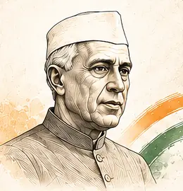

“
Governments are, in fact the expression of the will of the people.
☸

Moved the Objectives Resolution
One of three speaking voices indexed in the sitting
Governments are, in fact the expression of the will of the people.
Move between the Chair, mover and seconder while preserving the sitting's order.
The Resolution text itself is condensed into a structured editorial summary; short quotations are used only where they materially improve understanding.